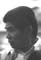

光
Xũ Göng
Cíguāng
前
Fãng Chëng
Hóngchāng

宏強 = 黃麗媚
Fãng Kẽng = Võng Lài Mĩ
Hóngqiáng = Huáng Lìmèi
遠
Jīn Yèl
Zhènyuè
Jīn Kiũ = Lĩm Fì Mẽin
Zhènqiú = Lín Huìmíng
遵
Gōk Dün
Guójùn
(b.1985)
| 148,107,60,25 光 |
慈光 Xũ Göng Cíguāng |
|
|---|---|---|
| 149,108,61,26 前 |
宏昌 Fãng Chëng Hóngchāng |

宏強 = 黃麗媚 Fãng Kẽng = Võng Lài Mĩ Hóngqiáng = Huáng Lìmèi |
| 150,109,62,27 遠 |
振耀 Jīn Yèl Zhènyuè |
振球 = 林慧鳴 Jīn Kiũ = Lĩm Fì Mẽin Zhènqiú = Lín Huìmíng |
| 151,110,63,28 遵 |
國俊 Gōk Dün Guójùn (b.1985) |
|